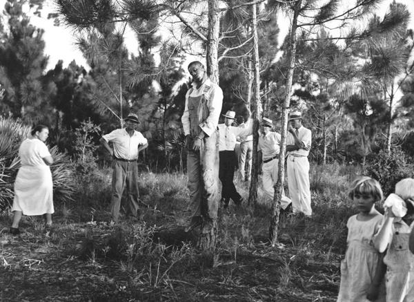
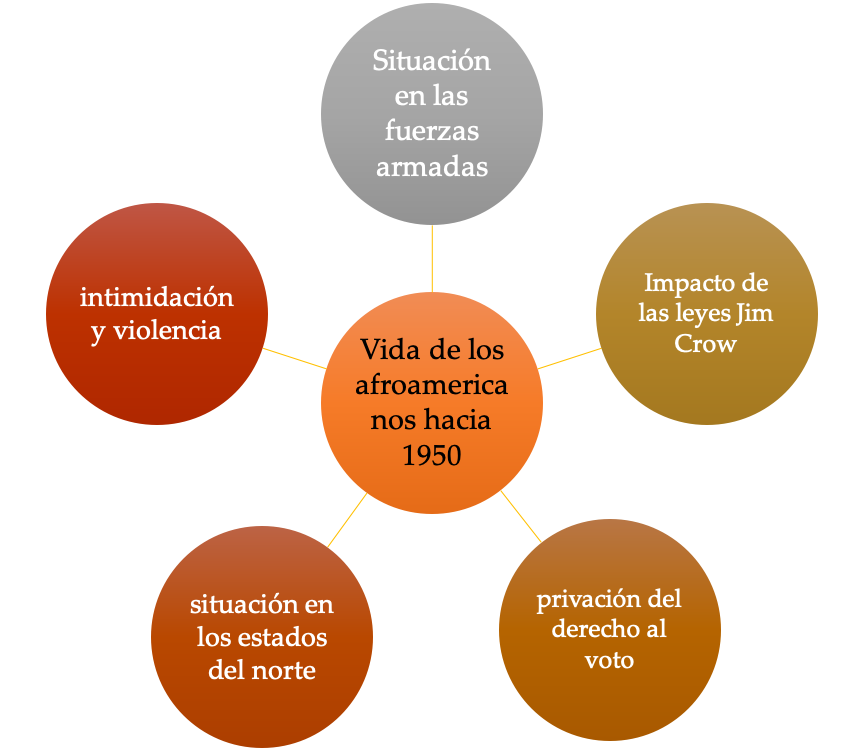
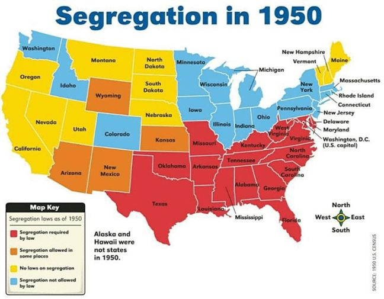
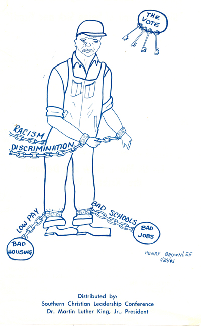

IB Docs (2) Team
IB Docs (2) Team

1. Movimiento por los derechos civiles en Estados Unidos (1954–1965)
Estas páginas le darán algunas ideas para actividades de enseñanza y aprendizaje para el estudio de caso del movimiento de derechos civiles en los EE.UU. Hemos incluido una gama de actividades que incluyen ejercicios de comprensión, juegos de rol, ejercicios con fuentes, resúmenes y actividades de mapas mentales.
Los vídeos y las ideas para utilizar los vídeos en la enseñanza se tratan en una página aparte; véase el lado izquierdo. Hay sugerencias de vídeo para la mayoría de los contenidos que deben ser cubiertos para esta unidad.
Preguntas orientadoras:
¿Qué formas de discriminación enfrentaron los afroamericanos en la década del 50 y cuáles fueron las repercusiones de esa discriminación?
¿De qué manera produjo cambios el sistema jurídico?
¿Cuál fue el impacto de la protesta no violenta?
¿Cuál fue el impacto de los cambios legislativos?
¿Qué importancia tuvieron las personas clave en el movimiento de derechos civiles?
¿Qué importancia tuvo Malcolm X en el movimiento por los derechos civiles?
¿Cuál fue el papel de las organizaciones de derechos civiles en el logro de los cambios?
1 1. Qué formas de discriminación enfrentaron los afroamericanos en la década del 50 y cuáles fueron las repercusiones de esa discriminación?

¿Qué puedes conocer a través de esta fotografía acerca de la violencia hacia los afroamericanos en los años 30?
Haz click en el ojo para algunas pistas
- Un afroamericano ha sido linchado indicando que esto se ha llevado a cabo sin ningún proceso legal
- Los blancos que miran no parecen preocuparse por el hombre que está siendo linchado. Nadie está haciendo nada al respecto, así que la violencia contra este hombre no es algo de lo que se preocuparan.
- El hecho de que haya niños presentes indica que esto no se considera un acontecimiento terrible
El linchamiento de Rubin Stacey en Fort Lauderdale, 1933
Como continuación de esta actividad inicial, escucha la siguiente canción y analiza el significado de las palabras y su mensaje,
La primera actividad es explicar el sistema político de los EE.UU. Esto es necesario para entender la relación entre los gobiernos de los estados y el gobierno federal, y la naturaleza de la constitución de los Estados Unidos. Ambas áreas son claves en la lucha por los derechos civiles.
Tarea Uno
ENFOQUES DE APRENDIZAJE: Habilidades de pensamiento y comunicación
Lee el siguiente resumen de la constitución de los EE.UU y luego responde las preguntas que siguen.
Federalismo versus gobierno estatal:
La constitución de los Estados Unidos se basa en el federalismo. Esto significa que los poderes y funciones del gobierno no están todos en manos del gobierno nacional de Washington, sino que se comparten entre Washington y los gobiernos de los estados, que tienen su sede en las capitales de cada uno de los 50 estados (véase el mapa siguiente, que muestra los diferentes estados de EE.UU. ). Así pues, los gobiernos de los estados tienen facultades para celebrar elecciones, establecer las calificaciones de los votantes, proporcionar un gobierno local, regular el comercio con el estado nacional, proporcionar educación, mantener una fuerza policial y el orden público interno. El gobierno federal o nacional es responsable de áreas tales como el comercio exterior, la regulación del comercio interestatal, la declaración de la guerra y la paz, la conducción de las relaciones exteriores. La fiscalidad y el control de la Guardia Nacional (milicia estatal) son compartidos por el gobierno federal y estatal.
Separación de poderes:La Constitución de los Estados Unidos divide el gobierno de los Estados Unidos en ramas : Poder Ejecutivo, Poder Legislativo y Poder Judicial .
El Poder Ejecutivo está a cargo del Presidente. El propone y hace cumplir las leyes, hace tratados internacionales, nombra a los jueces del Tribunal Supremo. Es, también, el Comandante en Jefe de las fuerzas armadas
El Poder Legislativo es el Congreso (la Cámara de Representantes y el Senado) que aprueba las leyes federales, aprueba los tratados y los nombramientos del presidente y controla el presupuesto federal.
El Poder Judicial es el Tribunal Supremo que revisa las decisiones tomadas en los tribunales inferiores, resuelve las controversias entre los estados y asegura que las leyes sean constitucionales.
Cada poder puede controlar al otro. Así, por ejemplo, el Presidente puede vetar leyes hechas por el Congreso pero el Legislativo puede anular el veto presidencial si dos tercios de ambas cámaras están de acuerdo, y también puede impugnar al Presidente si se considera que está actuando de manera inconstitucional . El Poder Judicial, mientras tanto, puede declarar la inconstitucionalidad de algunas leyes si considera que van en contra de la Constitución. Además, ningún miembro del Ejecutivo puede ser miembro del Congreso.
La Constitución
La Constitución de los EE.UU. fue redactada en 1789. Incluye una Declaración de Derechos que establece los derechos de los ciudadanos estadounidenses. La constitución puede ser enmendada, pero esto implica obtener el acuerdo de cambio de una mayoría de dos tercios en la Cámara de Representantes y en el Senado. Esto entonces tiene que ser ratificado por al menos tres cuartos de los estados. Sólo se han aprobado 27 enmiendas desde 1789.
Tareas:
Dibuja un diagrama para mostrar las diferentes características de la constitución de los EE.UU. y cómo se relacionan entre sí
¿Cuáles son, en tu opinión, las ventajas de un sistema federal y del sistema de "separación de poderes"?
Encuentra ejemplos de: a) las principales enmiendas que se han hecho a la constitución, b) cuando un Presidente ha usado un veto, c) cuando el congreso ha tratado de impugnar a un Presidente.
La segunda actividad aquí es hacer que los estudiantes investiguen los antecedentes de los eventos de los años 50. Esto es para asegurar que los estudiantes tengan una comprensión de los acontecimientos anteriores a los años 50 que condujeron a la situación que existía al principio de su curso.
Tarea Dos
ENFOQUES DE APRENDIZAJE: Habilidades de investigación y comunicación
Dividan la clase en tres grupos.
Cada grupo debe investigar uno de los siguientes aspectos con respecto a la situación de los afroamericanos en los estados del sur de los EE.UU. hacia 1950. Después, presentará sus hallazgos al resto de la clase que debe tomar notas. El último grupo hará una presentación sobre la situación en los estados del norte. La presentación deberá incluir un PPT con imágenes y mapas claros cuando sea apropiado. Cada grupo deberá también producir uno o dos hojas de notas sobre su tema para distribuirlas a la clase después de su presentación.
- Las Leyes de Jim Crow: origen, impacto y la situación en los años 50
- El Ku Klux Klan: origen, impacto y situación en los años 50
- Las restricciones políticas a los afroamericanos y su impacto
- Intentos realizados para mejorar la situación de los afroamericanos antes de 1950; personas y organizaciones clave involucradas (también incluyan las medidas adoptadas durante la Segunda Guerra Mundial
- La situación de los afroamericanos en los estados del norte en la década de 1950
Tarea Tres
ENFOQUES DE APRENDIZAJE: Habilidades de autogestión
Esta es una continuación de la Tarea Dos. Los estudiantes deben añadir notas al diagrama que aparece a continuación mientras ven las presentaciones, o como resultado de una lectura más profunda y una toma de notas sobre la situación de los afroamericanos en la década de 1950.
¿Cuál era la situación en los EE.UU. para los afroamericanos en 1950?
Después de escuchar las presentaciones de su clase, agrega información a este diagrama (o crea tu propia infografía) para ilustrar la situación de los afroamericanos en la década de 1950.

2. ¿De qué manera produjo cambios el sistema jurídico?

Leyes de segregación en 1950
En ROJO: estados donde era ley
En NARAJA: estados donde la segregación era parcial
En AMARILLO: sin leyes segregacionistas
En CELESTE: el segregacionismo estaba legalmente prohibido
Tarea Uno
ENFOQUES DE APRENDIZAJE: habilidades de pensamiento e investigación
Separar a los niños negros... sólo por su raza genera un sentimiento de inferioridad en cuanto a su estatus en la comunidad que puede afectar a sus corazones y mentes de maneras que es improbable que se revierta... Concluimos que en el campo de la educación pública la doctrina de "separados pero iguales" no tiene cabida. Las instalaciones educativas separadas son intrínsecamente desiguales".
¿Qué nos permite conocer este fallo del presidente del Tribunal Supremo en 1954, Earl Warren, sobre la segregación en la educación en los años 50?
El 17 de mayo de 1954, la Corte Suprema de los Estados Unidos dictaminó en el caso Brown contra la Junta de Educación de Topeka que las escuelas segregadas son "inherentemente desiguales". En septiembre de 1957, como resultado de ese fallo, nueve estudiantes afroamericanos se matricularon en la Escuela Secundaria Central en Little Rock, Arkansas. Esto inició una crisis en Little Rock que puso de relieve la batalla entre los segregacionistas y los que querían la integración. También causó conflicto entre el estado de Arkansas y el gobierno federal.
Tarea Dos
ENFOQUES DE APRENDIZAJE: Habilidades de investigación
Para cada uno de los siguientes, toma para analizar a) lo que sucedió b) los resultados c) la importancia para la lucha por los derechos civiles
Plessey contra Ferguson (1896)
Brown contra Topeka (1954)
Little Rock (1957)
Tarea Tres
ENFOQUES DE APRENDIZAJE: Habilidades de pensamiento
Un extracto de un telegrama enviado al presidente Eisenhower por el senador estadounidense Russell de Georgia en septiembre de 1957. Russell estaba en contra del movimiento de derechos civiles,
Como ciudadano, como senador de los Estados Unidos y como presidente del comité del senado de servicios armados, debo protestar enérgicamente contra los métodos prepotentes e ilegales empleados por las fuerzas armadas de los Estados Unidos bajo su mando que cumplen sus órdenes de mezclar las razas en las escuelas públicas de Little Rock Arkansas. Si han de creerse los informes de las asociaciones de prensa y periodistas de renombre, estos soldados están despreciando y anulando los derechos elementales de los ciudadanos americanos aplicando tácticas que deben ser copiadas del manual emitido a los oficiales de las tropas de asalto de Hitler. El poderío militar que se ha reunido allí hace que acciones como las que describen estos periódicos sean completamente inexcusables a menos que el propósito sea intimidar y sobrecoger a toda la gente del país que se opone a mezclar las razas por la fuerza".
Con referencia al origen, propósito y contenido, juzgue el valor de estas fuentes para un historiador que estudia la reacción pública a la decisión de Eisenhower de enviar tropas federales a Little Rock
Tarea Cuatro
ENFOQUES DE APRENDIZAJE: Habilidades de pensamiento
Escribe una respuesta del presidente Eisenhower al telegrama de la Tarea Tres. Considera cómo podría haber refutado las acusaciones de violencia por parte del ejército, la de ilegalidad y la referencia a Hitler.
Nota: Cuando hayas completdo esta tarea, puede leer su respuesta real en los archivos de Eisenhower.
3. ¿Cuál fue el impacto de la protesta no violenta?
Actividad de inicio:
¿Qué puedes conocer a través de esta fuente sobre la naturaleza de la protesta no violenta?
¿Qué impacto tendrían tales tácticas cuando imágenes como esta se mostraban en la televisión y los periódicos?
Brown vs Topeka y Little Rock fueron hitos clave para la campaña de Derechos Civiles y ambos habían involucrado a la Corte Suprema como forma de lograr cambios.
La notoriedad que rodeaba a Little Rock también permitió al mundo entero ver el impacto de la segregación en los Estados Unidos.
Los años 50 y 60 también fueron testigos del uso de la acción directa por parte de ciudadanos comunes como parte de la campaña para mejorar los derechos civiles. Esta acción directa incluía acciones no violentas como el boicot a los autobuses de Montgomery, las sentadas, los viajes de la libertad, así como marchas y manifestaciones.
Tarea Uno
ENFOQUES DE APRENDIZAJE: Habilidades de pensamiento y comunicación
En la página de vídeos de esta sección se pueden ver los efectos de la acción directa: 2. El movimiento de derechos civiles en los Estados Unidos: Vídeos y actividades
Toma notas mientras ves los videos y completa la tabla de abajo.
Esto también podría hacerse como trabajo de grupo; cada grupo investigando una de estas campañas y luego ofreciendo un informe al resto de la clase.
4. ¿Cuál fue el impacto de los cambios legislativos?
Actividad de inicio
¿Qué información ofrece este gráfico acerca del impacto de la ley de derecho al voto de 1965
AL: Alabama
GA: Georgia
LA: Loiusiana
MS: Massachussets
NC: Carolina del Norte
SC: Carolina del Sur
VA: Virginia
Tarea Uno
ENFOQUES DE APRENDIZAJE: Habilidades de pensamiento
Lyndon Baines Johnson, discurso sobre la ley de derecho al voto, 15 de marzo de 1965
Todos los ciudadanos americanos deben tener el mismo derecho a votar. Sin embargo, la realidad es que en muchos lugares de este país se impide a los hombres y mujeres votar simplemente porque son negros. Cada dispositivo del que es capaz el ingenio humano ha sido utilizado para negar estos derechos. El ciudadano negro puede ir a registrarse sólo para que le digan que el día está equivocado, o que la hora está atrasada, o que el funcionario a cargo está atrasado, o que el funcionario a cargo está ausente. Y si persiste y logra presentarse para inscribirse, puede ser descalificado por no haber escrito su segundo nombre o por haber abreviado una palabra en su solicitud. Y si logra llenar una solicitud se le hace una prueba. El registro es el único juez de si pasa la prueba. Se le puede pedir que recite toda la constitución o que explique las disposiciones más complejas de las leyes estatales. Y ni siquiera un título universitario puede ser usado para probar que puede leer y escribir. Porque el hecho es que la única manera de pasar estas barreras es mostrando una piel blanca. Este proyecto de ley eliminará las restricciones al voto en todas las elecciones - federales, estatales y locales - que han sido utilizadas para negar a los negros el derecho al voto.
- Según Johnson, ¿qué problemas existían para los afroamericanos con respecto a la votación antes de la ley de derecho al voto?
- En cuanto a su origen, propósito y contenido, ¿cuán valiosa es esta fuente para mostrar el impacto de la ley de derecho al voto?
Tarea Dos
ENFOQUES DE APRENDIZAJE: Habilidades de pensamiento y sociales
De a dos, discutan las siguientes preguntas:
¿Qué cambios en los derechos civiles se habían producido a través de a) medios legales b) acción de grupo c) acción política?
¿Hasta qué punto habían cambiado las vidas de los afroamericanos para 1965?
¿Consideran que la protesta no violenta había tenido éxito? ¿Por qué algunos afroamericanos podrían sentirse frustrados por este enfoque para asegurar el cambio?
5. ¿Qué importancia tuvieron las personas clave en el movimiento de derechos civiles?
Actividad de inicio
De a dos, discutan lo siguiente:
Repasen los acontecimientos clave del movimiento de derechos civiles hasta 1965. ¿Qué individuos se destacan por haber hecho una diferencia y por qué?
Tarea Uno
ENFOQUES DE APRENDIZAJE: Habilidades de pensamiento
Martin Luther King se destaca como una de las figuras más influyentes en el movimiento de derechos civiles.
Mira este vídeo del discurso más famoso de Martin Luther King .
¿Por qué crees que se ha convertido en un discurso tan icónico? ¿Qué dispositivos retóricos utiliza? ¿Qué tipo de imágenes utiliza?
La participación de Martin Luther King en el boicot de autobuses de Montgomery lo llevó a la vanguardia del movimiento de derechos civiles. Sus ideas sobre la no resistencia también influyeron en las protestas de los años siguientes. Los estudiantes deben comprender la participación de Martin Luther King en las principales protestas de derechos civiles y el impacto de cada una. La siguiente actividad actuará como una tarea de revisión de los principales hitos en la lucha por los derechos civiles.
Tarea Dos
ENFOQUES DE APRENDIZAJE: Habilidades de investigación y pensamiento
Toma nota de la participación de Martin Luther King en los siguientes acontecimientos. Identifica su contribución y evalúa cuán significativas fueron sus opiniones y acciones en cada caso.
Boicot a los autobuses de Montgomery, 1955
La Conferencia Sur de Liderazgo Cristiano
La campaña de Birmingham, 1963
La marcha sobre Washington, 1963
La Ley de Derechos Civiles de 1963
La marcha sobre Selma, 1965
La concientización sobre la pobreza y sobre la guerra de Vietnam
Tarea Tres
ENFOQUES DE APRENDIZAJE: Habilidades de pensamiento
Martin Luther King fue asesinado en 1968. Redacta su obituario (necrología). La tarea anterior proporcionará la base para esta tarea. (Puede que quieras leer ejemplos de obituarios para conseguir el tono y estilo correctos).
Tarea Cuatro
ENFOQUES DE APRENDIZAJE: Habilidades de pensamiento
Considere las opiniones de los historiadores a continuación sobre el papel de MLK. De ados, consideren las pruebas que podrían utilizarse para apoyar o refutar cada afirmación.
¿Cuál es el punto de vista con el que más están de acuerdo? ¿Por qué?
Creo que gente como Rosa Parks hizo posible que King mostrara sus singulares cualidades de liderazgo. El movimiento habría ocurrido incluso sin King. Sin el movimiento, King habría sido un ministro bautista articulado y activista, sin un día festivo con su nombre' Profesor Claybourne Carson
http://news.stanford.edu/news/2013/january/carson-king-legacy-01173.html
King se convirtió en el centro del movimiento de derechos civiles que surgió tras el boicot a los autobuses. Durante el decenio de 1960 pronunció innumerables discursos caracterizados por su genio oratorio, dirigió una sucesión de marchas masivas en el corazón de la América segregada y ayudó a reconstruir las relaciones raciales de América antes de su asesinato en 1968". Dr. Joe Street
http://www.history.ac.uk/reviews/review/46
Al adular a King por su trabajo en las campañas de derechos civiles, hemos tergiversado la complejidad de esas luchas e ignorado algunas de las campañas igualmente desafiantes de sus últimos años' Peter Ling.
http://www.historytoday.com/peter-ling/martin-luther-king%E2%80%99s-half-forgotten-dream
Los métodos de Martin Luther King fueron cuestionados por Malcolm X.
6. Cuál fue el papel de Malcolm X en el movimiento de derechos civiles?
Aunque el movimiento de derechos civiles obtuvo victorias en la legislación de 1964 y 1965, ni el derecho al voto ni las garantías de igualdad de oportunidades ayudaron realmente a la situación económica de muchos afroamericanos. Esto condujo a un creciente resentimiento. El desempleo de los afroamericanos seguía siendo el doble del promedio nacional; casi un tercio de los afroamericanos vivían por debajo del umbral de pobreza. Las escuelas, los servicios sociales y las viviendas seguían siendo de calidad inferior y la brecha económica entre los dos grupos seguía aumentando. Esta frustración alentó un radicalismo creciente entre muchos jóvenes afroamericanos. El movimiento de derechos civiles parecía haber logrado muy poco en todos estos aspectos y exigía un enfoque más radical, como se indica en el siguiente discurso de Malcolm X. La violencia racial estalló en las ciudades del norte en 1965, con los disturbios más graves desarrollándose en el distrito de Watts de Los Ángeles. A partir de esta ira y frustración, se desarrolló un nuevo enfoque conocido como "Poder Negro" y "nacionalismo negro". El término Poder Negro ("Black Power" en inglés) fue acuñado por Stokely Carmichael, quien se convirtió en presidente del SNCC en 1966 (y que luego expulsó a todos miembros blancos). Las ideas del "Poder Negro" y el "nacionalismo negro" pueden verse en las acciones y creencias de la "Nación del Islam" y las Panteras Negras.
La Nación del Islam era una secta religiosa que rechazaba el cristianismo en favor del Islam y predicaba que todos los blancos eran demonios. En la década de 1960, Elijah Muhammad era el líder y su número de miembros creció enormemente durante este tiempo debido en gran parte a la predicación de uno de sus ministros, Malcolm X.
Tarea Uno
ENFOQUES DE APRENDIZAJE: Habilidades de pensamiento
De un discurso de Malcolm X en la Conferencia de Liderazgo de los Negros del Norte, Detroit, noviembre de 1963
El hombre blanco sabe lo que es la revolución. Sabe que la revolución negra es mundial en alcance y naturaleza. La revolución negra está barriendo Asia, está barriendo África, está levantando la cabeza en América Latina.
La revolución es sangrienta, la revolución es hostil, la revolución no conoce compromisos, la revolución vuelca y destruye todo lo que se interpone en su camino.
¿Quién ha oído hablar de una revolución en la que se cierran los brazos cantando "venceremos"? No se hace eso en una revolución. Esos negros no están pidiendo una nación, están tratando de arrastrarse de vuelta a la plantación.
1. ¿Qué podemos aprender de esta fuente sobre las opiniones de Malcolm X con respecto a la protesta?
2. ¿Cuáles son sus críticas a las ideas de Martin Luther King sobre la no resistencia?
Uno de los discursos más famosos de Malcolm X fue su discurso "El voto o la bala" de 1964. Abajo encontrarás una actividad sobre este discurso. También se adjunta un PDF sobre la actividad.
Tarea Dos
ENFOQUES DE APRENDIZAJE: Habilidades de pensamiento
Aquí hay dos extractos de un discurso de Malcolm X que se conoció como el discurso de "El voto o la bala". Puedes leer el discurso completo aquí .
Lee los siguientes extractos y luego responde a estas preguntas:
1. ¿Por qué Malcolm X rechaza a América y los valores americanos?
2. ¿En qué "frentes" quiere Malcolm X luchar?
3. ¿Cuál es el significado del nacionalismo negro según Malcolm X?
4. ¿Qué quiso decir Malcolm X con "el voto o la bala”
Si no hacemos algo muy pronto me parece que estarán ustedes de acuerdo en que nos vamos a ver obligados a escoger entre la bala y el voto. En 1964 hay que escoger entre una cosa y la otra. No es que el tiempo se vaya volando: ¡el tiempo ya se voló!
No, yo no soy norteamericano. Soy uno entre los veintidós millones de negros víctimas del norteamericanismo. Uno entre los veintidós millones de negros víctimas de la democracia, que no es más que hipocresía enmascarada. Así es que no estoy aquí hablándoles como norteamericano ni como patriota ni como el que saluda la bandera ni como el que hace ondear la bandera; no, yo no. Yo estoy hablando como víctima de este sistema norteamericano. Y veo a Estados Unidos de Norteamérica con los ojos de la víctima. No veo ningún sueño norteamericano; veo una pesadilla norteamericana.
La filosofía política del nacionalismo negro consiste en que el negro controle la política y a los políticos de su propia comunidad; nada más.
La filosofía económica del nacionalismo negro es pura y simple. Consiste sencillamente en que controlemos la economía de nuestra comunidad.
Tarea Tres
ENFOQUES DE APRENDIZAJE: Habilidades de investigación
Investiga sobre la carrera y las creencias de Malcolm X y su participación en la Nación del Islam.
Prepara una hoja de datos para resumir los principales eventos de su vida; incluye citas y frases importantes.
(Consulta el video sobre Malcolm X de 'Eyes on the Prize' que se puede encontrar aquí: Vídeos: Derechos Civiles en los EE.UU .)
Tarea Cuatro
ENFOQUES DE APRENDIZAJE: Habilidades de pensamiento y comunicación
Formen parejas. Uno de ustedes debe ser Malcolm X y el otro debe ser Martin Luther King. En la vida real, los dos hombres se vieron brevemente en una sola ocasión.
Actúen la conversación que creen que pudieron haber tenido. Asegúrense de que cada uno de ustedes exponga sus creencias sobre la mejor manera de llevar adelante el movimiento por los derechos civiles. Incluyan sus críticas a los puntos de vista del otro.
Sus propias experiencias de vida también son relevantes para sus puntos de vista, así que no olviden referirse a ellos también. (Este ejercicio puede ser espontáneo o pueden escribir un guión y luego presentarlo al resto de la clase).
Tarea Cinco
ENFOQUES DE APRENDIZAJE: Habilidades de comunicación
La propuesta es armar una galería de todos los individuos involucrados en el movimiento de derechos civiles. Cada estudiante toma un individuo. En una hoja A4 de una cara, reúne una foto, los eventos clave en los que su individuo estuvo involucrado, contribuciones significativas, citas significativas. Debe ser clara y bien presentada. Todas las hojas A4 deben ser exhibidas en la pared como parte de la galería de individuos significativos.
Esta tarea podría ser seguida por un "debate en el que cada estudiante asume el papel de uno de los individuos. Todos los personajes están en un globo aerostático imaginario. Cada personaje debe argumentar por qué su papel en el movimiento de derechos civiles fue más significativo que el de los demás y, por lo tanto, ¡no deben ser arrojados del globo!
7. Cuál fue el papel de las organizaciones de derechos civiles en el cambio?
Actividad inicial
¿Cuál es el mensaje de este folleto del SCLC?

http://ttp://www.crmvet.org/docs/selmaf.htm
The vote: el voto
Racism: racismo
Discrimination: discriminación
Bad schools: malas escuelas
Bad housing: malas viviendas
Low pay: paga baja
Distributed by….; distribuido por la La Conferencia Sur de Liderazgo Cristiano
Tarea Uno
ENFOQUES DE APRENDIZAJE: Habilidades de investigación y comunicación
Divídanse en grupos. Cada grupo debe tomar una de las siguientes organizaciones: Asociación Nacional para el Progreso de la Gente de Color (NAACP), Conferencia Sur de Liderazgo Cristiano (SCLC), Comité Coordinador Estudiantil por la No Violencia (SNCC), Nación del Islam (Musulmanes Negros). Deberían investigar su grupo bajo los siguientes encabezados:
- cuándo y por qué emergió
- membresía
- objetivos
- las principales medidas que tomó en la lucha por los derechos civiles
- importancia general para el movimiento de derechos civiles
Cada grupo debe presentar sus hallazgos al resto de la clase y producir un folleto de una o dos carillas con los puntos principales referidos a su organización usando los títulos dados.
El resto de la clase toma notas durante las presentaciones. La siguiente tabla les ayudará a organizar la información.
 Los grupos de derechos civiles para
Los grupos de derechos civiles para
 Twitter
Twitter
 Facebook
Facebook
 LinkedIn
LinkedIn